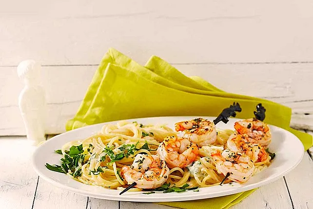

Zitronenspaghetti mit Kräutergarnelen
Zutaten
| 350 g | Spaghetti |
| 2 EL | Butter |
| 80 ml | Sahne |
| 1 | Zitrone |
| 2 EL | Kräuter nach Wahl |
| 3 EL | Parmesan |
| Chillipulver | |
| 350 g | Garnelen |
| 2 EL | Olivenöl |
| 1 Zweig | Rosmarin |
| 1 Zweig | Thymian |
| 2 Zehen | Knoblauch |
| Salz und Pfeffer |
Zubereitung
- Die aufgetauten Garnelen abspülen und trocken tupfen. Den Knoblauch schälen und fein hacken. Die Kräuter (z. B. Petersilie) waschen und fein hacken. Die Bio-Zitrone abreiben und den Saft auspressen.
- Einen großen Topf mit Salzwasser zum Kochen bringen. Die Spaghetti nach Packungsanweisung al dente kochen. Die Spaghetti abgießen, dabei etwas Kochwasser auffangen, und beiseite stellen.
- In einer großen Pfanne die Butter bei mittlerer Hitze schmelzen. Die Sahne hinzufügen und unter Rühren erhitzen. Den Zitronenabrieb und den Zitronensaft einrühren. Mit Salz, Pfeffer und nach Belieben Chilipulver abschmecken. Die gekochten Spaghetti in die Pfanne geben und gut mit der Zitronensauce vermengen. Falls die Sauce zu dick ist, etwas vom aufgefangenen Kochwasser der Spaghetti hinzufügen.
- In einer separaten Pfanne das Olivenöl bei mittlerer bis hoher Hitze erhitzen. Den gehackten Knoblauch, den Rosmarinzweig und den Thymianzweig hinzufügen und kurz anbraten, bis der Knoblauch duftet. Die Garnelen in die Pfanne geben und anbraten, bis sie rosa und durchgegart sind (ca. 2-3 Minuten pro Seite). Die Rosmarin- und Thymianzweige entfernen.
- Die fein gehackten Kräuter und den geriebenen Parmesan zu den Zitronenspaghetti in die Pfanne geben und gut vermengen.
- Die Zitronenspaghetti auf Teller verteilen. Die gebratenen Kräutergarnelen darauf anrichten. Nach Belieben mit zusätzlichen Kräutern und Parmesan garnieren. Sofort servieren.